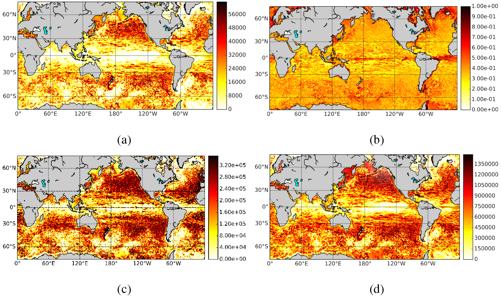

Networks from large time-series collections
Correlate everything against everything, and fifty years of climate fields become one graph whose structure can be measured.
OneThe computational problem
Take ten thousand grid points of sea-surface temperature over fifty years and ask which of them move together. The answer is a graph with ten thousand nodes and, before any threshold is applied, fifty million candidate edges, and the interesting structure, the hubs and communities that correspond to known teleconnectionsa, only appears once the graph is complete. Building it is a computational problem before it is a scientific one, and the interpretation is a statistical problem after that: which edges are real, and which are the product of autocorrelation and multiple testingb.
TwoFrom correlation maps to a single object
Climate networks turned a field's worth of correlation maps into a single object with measurable topology [1, 2], and the approach now has a textbook [3]. The same construction applies to any set of co-evolving series: sensor fleets, maintenance events across sites, markets, reporting systems. What limited it in 2014 was compute. What limits it now is the statistics, because the tools have become easy enough to produce a beautiful graph from noise.
ThreePar@Graph
During a Marie Curie fellowship at Utrecht University and VORtech I built Par@Graph [4], a parallel toolkit for constructing and analysing climate networks from very large time-series sets, validated on the Dutch national supercomputer. It is cited in the Cambridge University Press volume on climate networks [3] and is still used by oceanographers.

FourWays back in
- Rebuild on current GPU graph libraries: The correlation and community steps that needed a supercomputer fit on a workstation now. A faithful port, with the statistical significance machinery built in this time. MSc
- Networks over operational event streams: Maintenance events and safety reports are interacting processes too. The same construction could expose coupling between subsystems, fleets or reporting sites, and it connects directly to the streams of the drift theme. PhD
- Teleconnection networks as forecasting inputs for renewable energy, which joins this theme to the wind-ramps theme. MSc or PhD
Notes
a Teleconnections are long-range statistical links in the climate system, conditions in one region moving with conditions thousands of kilometres away; El Niño's remote effects are the best known. ↩
b Autocorrelation means a series is correlated with its own past, which makes chance agreement between two smooth series easy to mistake for a real link. Multiple testing is the companion problem that among fifty million candidate edges, a great many will pass any significance test by luck alone. ↩
References
- Tsonis, A. A. and Roebber, P. J. (2004). The architecture of the climate network. Physica A, 333, 497-504. doi:10.1016/j.physa.2003.10.045
- Donges, J. F., Zou, Y., Marwan, N. and Kurths, J. (2009). Complex networks in climate dynamics. European Physical Journal Special Topics, 174, 157-179. doi:10.1140/epjst/e2009-01098-2
- Dijkstra, H. A., Hernández-García, E., Masoller, C. and Barreiro, M. (2019). Networks in Climate. Cambridge University Press.
- Ihshaish, H., Tantet, A., Dijkzeul, J. C. M. and Dijkstra, H. A. (2015). Par@Graph: a parallel toolbox for the construction and analysis of large complex climate networks. Geoscientific Model Development, 8, 3321-3331. doi:10.5194/gmd-8-3321-2015